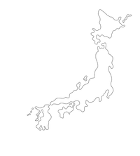

Degrees

Tsukuba
International Bachelor Exchange in Japan
University of Tsukuba
College of International politics and economics
Annecy
Diplome Universitaire Technique (DUT) Company management and administration
IUT d'Annecy
College of Management, accounting, global finance, economics
Professional title Web Developer
AFPA
Field of study : Front Web - HTML - CSS - JS, Back End - PHP - MySQL